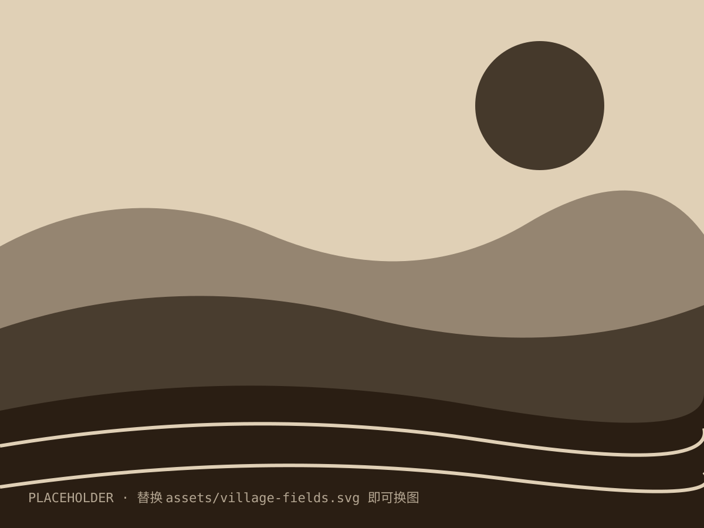

A HUMANITIES READING · 2026
费孝通 著 · 一场跨越八十年的对话
人文读书分享 · 第二期
01 · WHY RE-READ
差序格局、礼治秩序、长老统治——书中写下的乡土逻辑，并没有随着城市化退场，它仍然是我们处理人情、关系与信任的默认方式。
住进高楼之后，我们把熟人社会搬进了手机：朋友圈的分组、点赞的远近亲疏、办事时先想的"有没有熟人"，水波纹一圈圈仍在向外推开。
读懂土地，才能读懂我们的父辈与来处，读懂那些说不出口、却根深蒂固地支配着日常行为的老规矩，以及我们对"家"的全部想象。
02 · ORIGIN
费孝通，江苏吴江人，中国社会学与人类学的奠基人之一。一九四七年，他将在西南联大讲授"乡村社会学"的讲稿整理为十四篇文章，连载于《世纪评论》，随后结集为这本薄薄的小书。
书很薄，只有一百多页；问题却很重——中国的基层社会究竟是什么样子？它凭什么运转？八十年过去，这两个问题依然悬在我们头上。
1910
生于江苏吴江，开弦弓村就在家附近
1938
博士论文《江村经济》震动国际学界
1947
《乡土中国》结集成书，一纸风行至今
"
从基层上看去，
中国社会是乡土性的。
—— 《乡土中国 · 乡土本色》
以农为生的人，世代定居是常态，
迁移是变态。
03 · READING NOTES
这一次重读，我不再把它当作社会学的入门课本，而是一面镜子——照见我们如何从土地里走出来，又如何在城市里一遍遍重建"乡土"。
"差序格局"是全书最著名的比喻：以"己"为中心，像石子投进水中，波纹一圈圈推出去，亲疏远近皆由关系而定。今天我们住进了商品房，门牌号取代了祠堂，可微信里的分组、饭局上的座次、办事时先想的"有没有熟人"，仍是那一圈波纹。差序格局没有消失，它只是换了一个容器。
"礼治秩序"同样如此。乡土社会不靠法律而靠礼俗，不靠外力而靠内心习以为常的敬畏。今天的规则多如牛毛，可真正让电梯里保持安静、让排队成为习惯的，仍是"不好意思"四个字。费孝通写的不是过去，而是中国社会的底层代码——版本不断更新，内核从未重写。
乡土不在身后，乡土就在我们身上。
04 · KEY WORDS
一块石头丢进水里，一圈圈推出去的波纹——中国人的社会关系，就是这样以"己"为中心、由近及远展开的同心圆。
不靠法律靠礼俗，维持秩序的是内心习以为常的传统。
年长者的经验即权威，教化代替强制，同意权力让横暴权力退居其次。
05 · THE LAND
从江村的桑田到华北的麦浪，乡土中国的底色，是一代代人弯腰耕作的土地。今天我们谈论乡村振兴、谈论返乡青年，谈论的仍然是人与土地的关系。
占位图 · 直接替换 assets/ 目录下的同名文件即可换图

EPILOGUE
重读《乡土中国》 · 人文读书分享 · 谢谢聆听